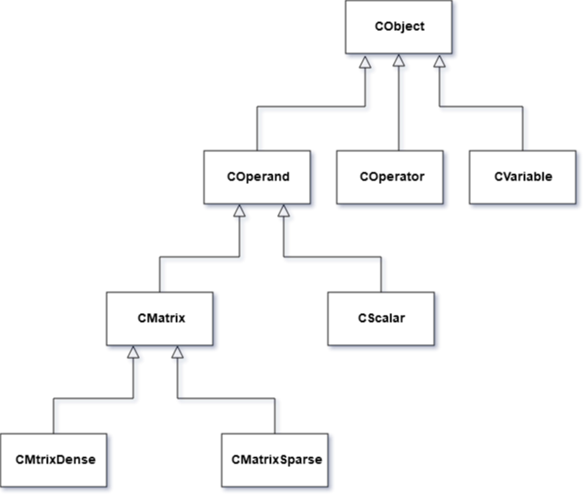

Mcalc
is an application, which provides different operations with matrices
and scalar values. It works according to the following steps:
1)
Get the string from input.
2) Parse it to reverse polish
notation represented as list and test the string for validness.
3)
Either calculate this list and output the value or save the variable
from input.
All the operations are evaluated using double dispatch method with the following hierarchy of classes:

Mcalc provides the following operations:
1)
Assignment
A = {[1,0],[0,1]}
a = 3
2) Summing
A
+ B
3) Subtraction
A - B
4)
Multiplication
a * B
5) Subdivision
a / b
6)
Exponentiation
a ^ b
7) Testing if two values are
equal
A == B
8) Finding transpose matrix
transpose(
A )
9) Finding determinant of the matrix
determinant(
A )
10) Finding rank of the matrix
rank( A )
11)
Finding inverse matrix
inverse( A )
A^(-1)
12)
Gaussian elimination
ge( A )
13) Finding minors
matrix
minors( A )
14) Matrices splitting
split(
A, x1, y1, x2, y2 ) // where x1, x2 are coordinates of the left upper
corner of new matrix
// y1, y2 are coordinates of the right
lower corner of new matrix
15) Matrices merging
merge(
A, B, n) // where n is 0,1,2 or 3. 0 means up, 1 right, 2 down, 3
left
16) Multiple operations
2 + 2 * determinant( A
)
ge( C * transpose( C ) )
merge( A, B, 1) == split( C, 1,
1, 3, 3)